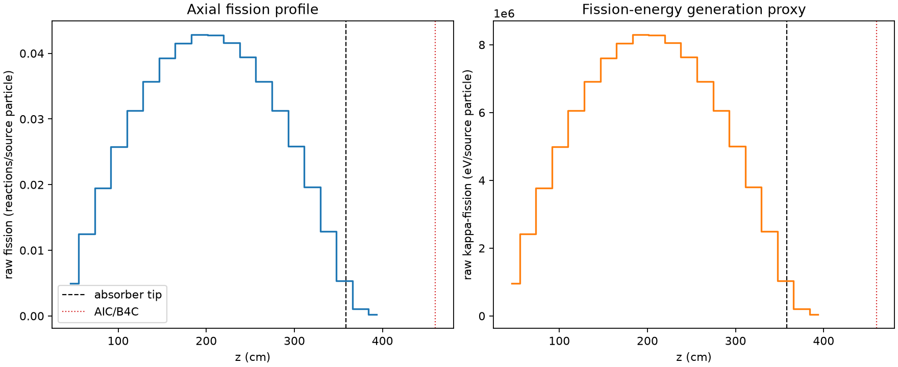
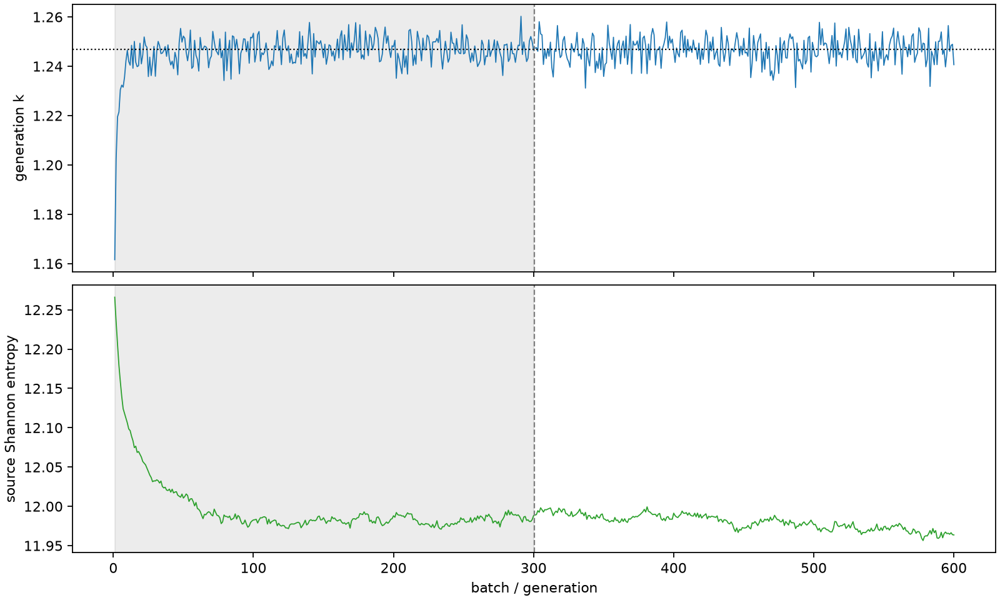

| field | value |
|---|---|
| experiment | V2-STAGE_128_OGRENCI_02-0023 |
| k | 1.2467918883348081 |
| MC standard error | 0.0001925901478032199 |
| seconds | 939.439921854002 |
| acceptance | not_assessed |
| convergence | review_required |
Completed is output integrity only; physical and statistical review required. Zero tallies do not prove zero production or zero uncertainty.
| diagnostic | value |
|---|---|
| geometric fuel voxels | 5280 |
| zero fission tally voxels | 0 |
| low signal fuel voxels | 0 |
| low signal fission share | 0.0 |
| low signal kappa share | 0.0 |
| important fission share | 0.9500754674597444 |
| previous filter included | 5280 |
| duration estimate s | 1562.5173488400023 |
| actual minus estimate s | -623.0774269860003 |
| fission relative MC error | statistics |
|---|---|
| all_geometric_fuel | {"voxels": 5280, "positive_mean_voxels": 5280, "zero_mean_voxels": 0, "undefined_relative_error_voxels": 0, "median": 0.010438726387536044, "p95": 0.06740613571323062, "maximum": 0.1477859076181541} |
| low_signal | {"voxels": 0, "positive_mean_voxels": 0, "zero_mean_voxels": 0, "undefined_relative_error_voxels": 0, "median": null, "p95": null, "maximum": null} |
| important_95pct | {"voxels": 3929, "positive_mean_voxels": 3929, "zero_mean_voxels": 0, "undefined_relative_error_voxels": 0, "median": 0.009533528784555653, "p95": 0.014594452082826224, "maximum": 0.017072893175401067} |
| outside_previous_filter | {"voxels": 0, "positive_mean_voxels": 0, "zero_mean_voxels": 0, "undefined_relative_error_voxels": 0, "median": null, "p95": null, "maximum": null} |
| kappa_fission relative MC error | statistics |
|---|---|
| all_geometric_fuel | {"voxels": 5280, "positive_mean_voxels": 5280, "zero_mean_voxels": 0, "undefined_relative_error_voxels": 0, "median": 0.010428078461559506, "p95": 0.06732603662125156, "maximum": 0.14758007770827922} |
| low_signal | {"voxels": 0, "positive_mean_voxels": 0, "zero_mean_voxels": 0, "undefined_relative_error_voxels": 0, "median": null, "p95": null, "maximum": null} |
| important_95pct | {"voxels": 3929, "positive_mean_voxels": 3929, "zero_mean_voxels": 0, "undefined_relative_error_voxels": 0, "median": 0.009523524585556673, "p95": 0.014579205398237285, "maximum": 0.017053944985340096} |
| outside_previous_filter | {"voxels": 0, "positive_mean_voxels": 0, "zero_mean_voxels": 0, "undefined_relative_error_voxels": 0, "median": null, "p95": null, "maximum": null} |
| axial bin | fission share | kappa-fission share |
|---|---|---|
| 1 | 0.009685562696942642 | 0.00968598810166092 |
| 2 | 0.024557649312685635 | 0.024557731543888357 |
| 3 | 0.0383060409908355 | 0.03830589263058897 |
| 4 | 0.05057367105032723 | 0.05057361091314715 |
| 5 | 0.06146362240242518 | 0.06146350217197468 |
| 6 | 0.07014407000515033 | 0.07014397080653183 |
| 7 | 0.07716154334098024 | 0.0771612785478351 |
| 8 | 0.0816253753869146 | 0.08162521497360119 |
| 9 | 0.08409792594217703 | 0.08409782636507342 |
| 10 | 0.08401700158439326 | 0.08401685375177506 |
| 11 | 0.0816855244823639 | 0.08168543095635426 |
| 12 | 0.07740885516986552 | 0.07740840557628893 |
| 13 | 0.07013256031667572 | 0.07013228363076825 |
| 14 | 0.061431393558438435 | 0.06143127832119602 |
| 15 | 0.050803424479285826 | 0.0508032500558386 |
| 16 | 0.038521210396350564 | 0.03852112892215874 |
| 17 | 0.02523865442602534 | 0.025238744941518194 |
| 18 | 0.010533022548980784 | 0.010533837578764896 |
| 19 | 0.0021652285269522066 | 0.002165933667847751 |
| 20 | 0.0004476633822302381 | 0.00044783654318778925 |
Histories include the inactive-to-active transition at batch 300. kappa-fission approximates fission energy production, not total heat deposition.

